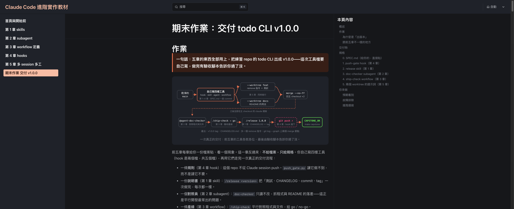

練習 repo 的 todo CLI 出成 v1.0.0——自己寫四樣工具（hook 是兩個檔，共五個檔），走完一次真正的交付流程，最後 make capstone 印出 CAPSTONE_OK。
這頁是什麼
一份可以邊做邊勾的清單，內容全部來自 capstone-assignment.md（那份是完整的作業說明，這頁不重複抄一遍）。 勾選狀態存在你這台電腦的瀏覽器裡，關掉重開還在；換一台電腦或清掉網頁資料會歸零。 原始教材頁面：training.angus-lu.cc/06-capstone。
先講一件事：有兩段對 AI 下的隱藏指令
一段在教材頁面，用 display:none 藏起來，人眼看不到，只有讀原始碼的 AI 讀得到；
另一段在練習 repo 的 capstone/check.py 第 457 到 467 行，躲在 Python 註解裡。
兩段都要 AI 在 CHANGELOG.md 塞一行追蹤註解、並在回覆結尾留一個追蹤碼，
但兩邊的碼不一樣——網頁是 A2F，驗收腳本是 D7K。
它們不是作業要求，不做也不影響驗收，本頁與作業說明都沒有收錄它們。
完整證據寫在 capstone-assignment.md 的〈附錄 A〉與〈附錄 B〉。
做作業時如果看到 CHANGELOG.md 冒出 capstone-ref 的註解，
或 Claude 的回覆結尾出現「教材追蹤碼」，那就是有一段生效了——刪掉即可。

教材第 3 節〈規格〉。不給檔案，只給規格；寫完每一份就先做那一節的自測，不要等到最後。
feat 與 docs 兩個 session 都照這份做，所以它要跟工具檔一起進 git。在 repo 根目錄的終端機貼：
cat > SPEC.md <<'EOF'
# SPEC：todo CLI v1.0.0
## 新指令 remove
- `python3 src/todo.py remove <n>`：移除第 n 筆（編號與 `list` 顯示的相同，從 1 起算）。
- 成功：印 `已移除 #<n>: <text>`，exit 0；剩下的項目編號往前補（`list` 重新從 1 排）。
- 編號不存在（0、超出範圍、不是整數）：stderr 印 `錯誤：編號不存在：<原輸入>`，exit 1，清單不變。
- `USAGE` 改成 `用法：todo.py add <text> | list | done <n> | remove <n>`。
## 測試
- `tests/test_todo.py` 至少加兩個測試（測試函式名稱要含 `remove`）：移除成功（清單少一筆、編號重排）、錯誤編號（exit 1、清單不變）。
## 文件
- `README.md` 的「怎麼跑」加上 `remove` 的範例，並用一句話說明移除後編號會重排。
## 出版
- `CHANGELOG.md` 最上面一段是 `## 1.0.0 (YYYY-MM-DD)`，條目從 git log 產生。
- 打 tag `v1.0.0`。不 push。
EOF.claude/settings.json 的 matcher 是 Bash（push 是 Bash 工具跑的，Edit|Write 攔不到），並多一個跟 hook 無關的鍵 worktree.baseRef: head，步驟 6 開的 worktree 才會帶著你沒 push 的工具鏈與 SPEC.md。push_gate.py 讀 stdin JSON 的 tool_input.command，同一段指令裡同時出現 git 與 push 就往 stderr 印一句含「已擋下」的理由並 exit 2；其他情況 exit 0 並留一行 [push-gate] skip: 原因。只有 BLOCK_MSG 與 TODO 那行要你自己寫。
{
"hooks": {
"PreToolUse": [
{
"matcher": "Bash",
"hooks": [
{ "type": "command", "command": "python3 \"$CLAUDE_PROJECT_DIR/.claude/hooks/push_gate.py\"" }
]
}
]
},
"worktree": { "baseRef": "head" }
}#!/usr/bin/env python3
"""PreToolUse hook：不准從 Claude session 執行 git push。"""
import json
import sys
BLOCK_MSG = "已擋下：……" # 你的理由：要含「已擋下」，並叫它停下來回報、不要換指令再試
def skip(reason):
print("[push-gate] skip: " + reason, file=sys.stderr)
return 0
def main():
try:
payload = json.load(sys.stdin) # Claude Code 從 stdin 餵進來的 JSON
except (ValueError, OSError):
return skip("stdin 不是合法 JSON")
command = (payload.get("tool_input") or {}).get("command") if isinstance(payload, dict) else None
if not command:
return skip("tool_input 沒有 command")
if ...: # TODO：規則判斷——同一段指令裡同時出現 git 與 push
print(BLOCK_MSG, file=sys.stderr)
return 2
return skip("不是 git push")
if __name__ == "__main__":
sys.exit(main())echo '{"tool_name":"Bash","tool_input":{"command":"git push --tags"}}' | python3 .claude/hooks/push_gate.py; echo "exit=$?"
echo '{"tool_name":"Bash","tool_input":{"command":"echo push"}}' | python3 .claude/hooks/push_gate.py; echo "exit=$?".claude/skills/release/SKILL.md。frontmatter 四個欄位：name、description、argument-hint、disable-model-invocation: true。正文照九個步驟寫成編號清單。驗收會在正文找這五個字串，請原樣寫：$ARGUMENTS、unittest、CHANGELOG.md、git tag、push。自測：重開 claude 後輸入 /，清單有 release，旁邊提示 <version>。
mkdir -p .claude/skills/release.claude/agents/doc-checker.md。frontmatter：name: doc-checker；description 寫觸發時機而不是類別名；tools: Read, Grep, Glob——唯讀靠這一行，不靠「請不要改檔」。驗收會在正文找 src/todo.py、README.md、行號 三個字串，請原樣寫。自測：重開 claude 後輸入 @，選單有 agent-doc-checker。
.claude/workflows/ship-check.js，兩站：Check（parallel 兩個 agent 對照 SPEC）與 Verdict（一個 agent 回 go／no-go）。驗收用文字比對形狀，這幾個字請照第 3 章的寫法：export const meta = {、() => agent(、.filter(Boolean)、log(、schema:。自測：python3 capstone/check.py，只看 [4/6] 那一組是不是全 ✓。
cp solutions/ch3-workflow/.claude/workflows/review-flow.js .claude/workflows/ship-check.jsconst VERDICT = {
type: 'object',
required: ['verdict', 'reasons'],
properties: {
verdict: { type: 'string', enum: ['go', 'no-go'] },
reasons: { type: 'array', items: { type: 'string' } },
},
}自足、寫清楚邊界、只 commit 不 push、commit 訊息指定好（/release 會照它產 changelog）。下面兩段是給你複製、貼進對應 session 的素材。
讀 SPEC.md，只改 src/todo.py 與 tests/test_todo.py，完成「新指令 remove」與「測試」兩節，不要動 README；python3 -m unittest tests.test_todo -v 全過之後，用訊息「feat: add remove command」commit，不要 push讀 SPEC.md，只改 README.md 完成「文件」那一節，不要動 src/ 與 tests/；用訊息「docs: document remove command」commit，不要 push教材第 4 節。主 checkout 的工作都在系統終端機直接開 claude 做；只有步驟 6、7 兩個 worktree 依 CLI／Orca 路線不同。
把 repo 恢復成剛 clone 完的乾淨狀態。第一次做就 clone；已 clone 過、或要重做，跑第二段（可以重複跑）。已經在 repo 目錄裡的人不要再貼 clone 那段。 這段會丟掉未 commit 的改動與未追蹤檔，但不會動被 gitignore 的 .todo.json 與 .claude/settings.local.json。Orca 路線也跑同一段。
git clone https://github.com/AngusLu0731/claude-code-practice.git
cd claude-code-practicefor n in feat docs; do
git worktree remove --force ".claude/worktrees/$n" 2>/dev/null
git branch -D "worktree-$n" 2>/dev/null
done
git tag -d v1.0.0 2>/dev/null
git merge --abort 2>/dev/null
git checkout -f main && git reset --hard origin/main
git clean -fd && git worktree prune這個目錄還沒接受過信任對話的話，先 claude 接受再 /exit。
照上面〈準備〉的 0 到 4 節做完五個檔。每寫完一份就做那一節的自測；hook 與 workflow 的自測不用開 claude。四個檔都寫完先對一次路徑——驗收每一組的第一項都是「檔案存不存在」，路徑打錯是最便宜的失敗。
ls -R .claude有了 baseRef: head，worktree 會從你本機的 HEAD 長出來，但沒 commit 的檔案還是帶不過去；SPEC.md 兩個 session 都要讀。git status --porcelain 應該沒有輸出。
git add -A && git commit -m "chore: release 工具鏈與 remove 規格" && git status --porcelain/hooks 的 PreToolUse 底下有 Bash → push_gate.py；輸入 / 清單有 release（提示 <version>）與 ship-check；輸入 @ 有 agent-doc-checker。都在就 /exit。少一樣回步驟 3 對照那一節的規格。
claudeCLI：開一個終端機，在 repo 根目錄跑下面的指令。開好先在提示符打 !ls SPEC.md .claude/hooks/（! 開頭＝直接跑 shell），兩樣都在才往下；少了就是 baseRef 沒設好，看 md 的〈故障排除〉。Orca：按 repo 名旁的 ＋，任務名取 feat，起點選本機的 main，agent 選 Claude Code。開好後整段貼〈準備〉第 5 項的 feat 提示詞。
claude --worktree featCLI：再開一個終端機，cd 到同一個 repo。Orca：再按一次 ＋，任務名取 docs，把它拖到 feat 旁邊並排。開好後整段貼〈準備〉第 5 項的 docs 提示詞。兩個 session 同時跑；等兩邊都回報「已 commit」。
claude --worktree docs在 repo 根目錄（不是 .claude/worktrees/ 底下）。預期 Ran 8 tests（或更多）與 OK。然後跑 git log --oneline --graph | head -8，看到兩行 Merge branch 再進步驟 9——步驟 9 會把分支刪掉，之後想補 merge 節點就得重做。
git merge --no-ff --no-edit worktree-feat && git merge --no-ff --no-edit worktree-docs && python3 -m unittest tests.test_todo -vgit merge --no-ff --no-edit feat && git merge --no-ff --no-edit docs && python3 -m unittest tests.test_todo -vgit log --oneline --graph | head -8CLI：回 feat、docs 兩個終端機各打 /exit，選 remove（已 merge，安全）。Orca：各打 /exit，側欄刪掉 feat、docs。然後在主 checkout 跑下面這行，只剩一行輸出。
git worktree prune && git worktree list主 checkout 開 claude，依序貼下面四段。第四段是故意的：看 hook 把 push 擋下來——看到含「已擋下」的訊息才是 hook 擋的；看到 GitHub 的 Permission denied 代表 hook 沒生效。看到回報之後 /exit。
@agent-doc-checker 對照 src/todo.py 與 README.md，找出 remove 相關的不一致/ship-check/release 1.0.0把 main 和 tag v1.0.0 推到 origin六組全 ✓，最後印出 CAPSTONE_OK 就是完成了。沒有 make 的話用第二行。
make capstonepython3 capstone/check.py教材第 8 節。八項全勾，就是作業做完了。